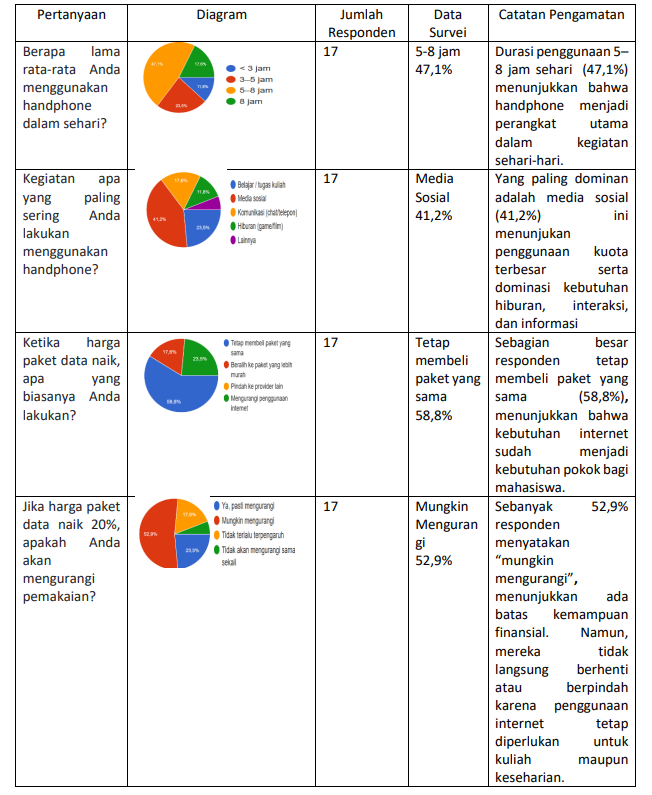
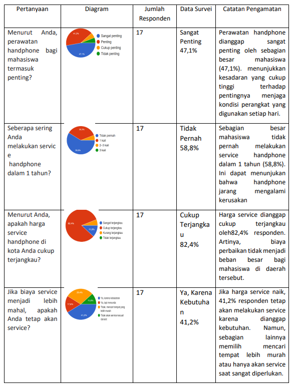
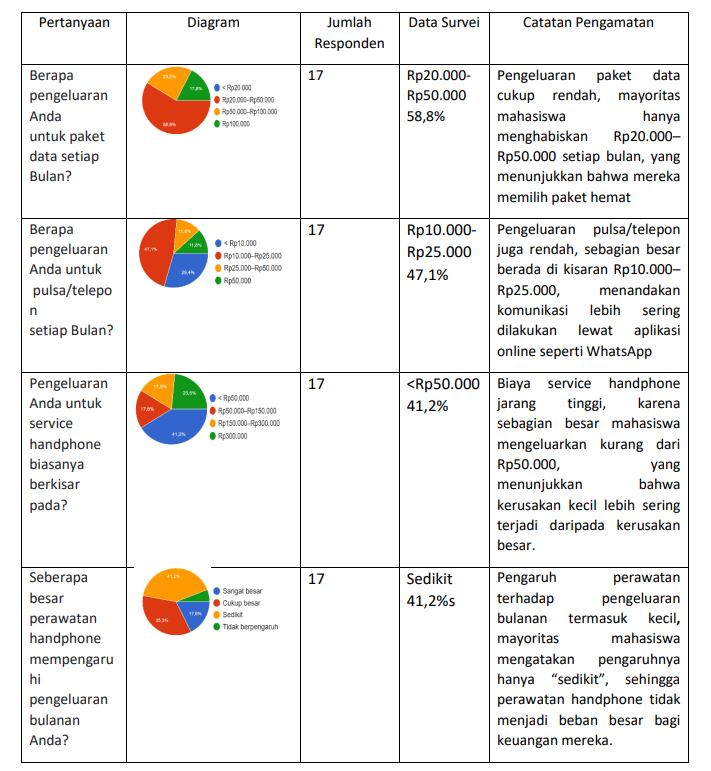

ANALISIS PENGELUARAN MAHASISWA UNTUK PERAWATAN HANDPHONE & POLA PENGGUNAANNYA
Oleh: Ni Putu Ayu Widya Pratiwi
Latar Belakang
Perkembangan layanan digital dan pembelajaran daring membuat smartphone jadi kebutuhan utama bagi mahasiswa. Penggunaan ponsel untuk mengakses materi kuliah, komunikasi, dan aktivitas sosial membuat konsumsi data dan pemakaian perangkat meningkat, sehingga biaya terkait pemakaian dan perawatan menjadi bagian penting dari pengeluaran bulanan mahasiswa.
Selain paket data dan pulsa, mahasiswa juga mengeluarkan biaya untuk perawatan fisik dan servis handphone seperti ganti layar, baterai, atau tempered glass. Meskipun layanan servis cukup banyak dan harganya bersaing, mahasiswa umumnya hanya melakukan servis saat terjadi kerusakan, bukan sebagai perawatan rutin. Akibatnya, pengeluaran servis bersifat tidak teratur dan sering muncul secara mendadak.
Dari sudut pandang ekonomi, biaya perawatan handphone dipengaruhi oleh permintaan, penawaran, dan elastisitas harga. Paket data dan pulsa termasuk pengeluaran rutin yang sulit dikurangi, sedangkan biaya servis lebih fleksibel dan tergantung kondisi. Analisis ini membantu memahami bagaimana mahasiswa mengatur anggaran ketika harga berubah.
Oleh karena itu, penelitian tentang komponen biaya, frekuensi servis, dan respons terhadap perubahan harga penting untuk melihat beban finansial mahasiswa. Hasilnya dapat menjadi dasar rekomendasi seperti memilih paket data hemat dan meningkatkan kesadaran perawatan preventif agar pengeluaran jangka panjang lebih terkendali.
Hasil Observasi: Data dikumpulkan melalui kuesioner online Google Form.
1 Pola Penggunaan Handphone Mahasiswa
Tabel 1 Pola Penggunaan Handphone

Berdasarkan tabel 1, penggunaan handphone mahasiswa tergolong tinggi dengan durasi 5-8 jam per hari. Handphone digunakan untuk kuliah, komunikasi, informasi, dan hiburan, dengan media sosial sebagai aktivitas yang paling banyak menghabiskan kuota. Kebutuhan paket data tetap tinggi meskipun harga naik, menunjukkan permintaan yang inelastis. Namun, saat kenaikan harga cukup besar, mahasiswa mulai mengurangi pemakaian agar sesuai dengan kemampuan keuangan.
2 faktor-faktor yang mempengaruhi keputusan mahasiswa dalam merawat handphone.
Tabel 2 Perawatan Handphone

Berdasarkan tabel 2, mahasiswa memiliki kesadaran tinggi akan pentingnya perawatan handphone, namun service jarang dilakukan dan hanya saat terjadi kerusakan. Harga service dinilai cukup terjangkau, sehingga tidak terlalu membebani. Ketika biaya meningkat, sebagian mahasiswa tetap melakukan service karena kebutuhan, sementara lainnya memilih menunda atau mencari alternatif yang lebih murah.
3 seberapa besar pengeluaran mahasiswa untuk paket data, pulsa, dan service
handphone sebagai bagian dari kebutuhan bulanan mereka.
Tabel 3 Besar Pengeluaran Handphone

Berdasarkan tabel 3, pengeluaran handphone mahasiswa tergolong ringan dan tidak membebani keuangan bulanan. Sebagian besar mahasiswa menghabiskan Rp20.000-Rp50.000 untuk paket data dan Rp10.000-Rp25.000 untuk pulsa, karena banyak memanfaatkan WiFi dan aplikasi online. Biaya service umumnya di bawah Rp50.000 dan hanya dilakukan saat diperlukan, sehingga perawatan handphone dinilai memberi pengaruh kecil terhadap pengeluaran bulanan.
Refleksi Pribadi
Dari penelitian ini, saya menyadari bahwa handphone memang sangat penting bagi mahasiswa, tetapi penggunaannya harus tetap bijak. Pengeluaran untuk paket data, pulsa, dan perawatan ternyata bisa dikelola dengan baik jika kita mampu mengatur kebutuhan dan memilih layanan yang tepat. Saya juga belajar bahwa keputusan ekonomi seperti permintaan, penawaran, dan elastisitas harga ternyata sangat berpengaruh pada kebiasaan kita sehari-hari, termasuk dalam menggunakan handphone. Penelitian ini membuat saya lebih sadar untuk menggunakan handphone secara lebih bijak, teratur, dan sesuai kemampuan finansial.